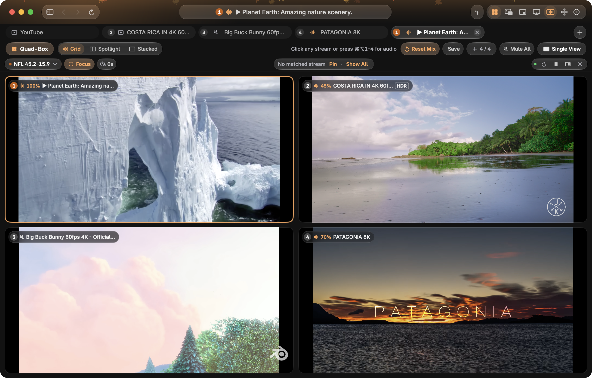

Multiview & Live Sports
Quad-Box Multiview with Zero-Latency Solo & Live Sync.
Watch up to four simultaneous streams in Grid, Spotlight, or Stacked layouts—mixing YouTube, YouTube TV (FairPlay DRM), Twitch, ESPN, NFL+, Peacock, and any HTTPS stream side by side.
- Zero-Latency Solo Tile (⌘⌥Z): Expand any tile full-window while keeping the other 3 streams live in the background; press Esc to snap back instantaneously with your split ratios intact.
- Live Stream Sync Micro-Nudge: Fine-tune broadcast delay per tile with −5s, −1s, +1s, or Jump to Live so games and watchalongs stay aligned.
- 120Hz Draggable Dividers & Audio Focus: Drag any split line smoothly (double-click to reset), press ⌘⌥1–4 for exclusive audio, or enable 15% background ducking.
- Saved Multiview Presets: Relaunch your favorite Sunday Quad or news wall with custom split ratios in one click.
